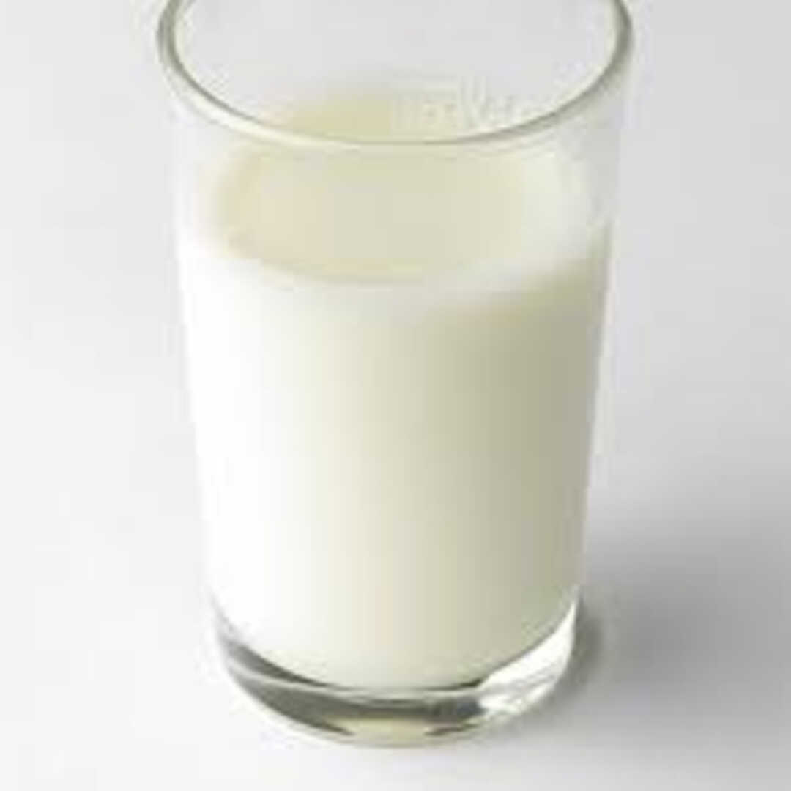

La etiqueta principal utilizada para crear una tabla en HTMl es "table", todos los componentes de la tabla deben estar dentro de esta etiqueta.
La etiqueta que se utiliza para definir una fila es "tr", dentro de esta etiqueta se deben poner las celdas de esa fila.
La etiqueta que se utiliza para crear un encabezado en una tabla es "th", las celdas de encabezado suelen tener información importante y se muestran en negrita de forma predeterminada.
la etiqueta que se utiliza para crear una celda de datos es "td".
El atributo que se utiliza para especificar cuantas columnas debe de abarcar una celda es "colspan".
El atributo que se utiliza para especificar cuantas filas debe de abarcar una celda es "rowspan".
La etiqueta que se utiliza para crear una tabla con 10 filas es "tr" y se debe utilizar 11 veces.
| Nombre | Calorias | Tipo | Imagen |
|---|---|---|---|
| almendra | 7 | fruto seco | |
| granada | 234 | fruta | |
| brocoli | 34 | verdura |
|
| leche | 42 | lácteo |  |
| salchicha | 301 | embutido |
| Pos. | Número | Piloto | Marca | Vueltas | Tiempo | Diferencia |
|---|---|---|---|---|---|---|
| 1º | 1 | Werner Mariano | Ford (Mustang) | 30 | 41:47.494 | |
| 2º | 19 | Ciantini Diego | CHEVROLET | 30 | 41:47.868 | 0.374 |
| 3º | 6 | Lambiris Mauricio | Ford | 30 | 41:51.295 | 3.801 |
| 4º | 157 | De Benedictis Juan B. | Ford (Mustang) | 30 | 41:52.639 | 5.145 |
| 5º | 79 | Chapur Facundo | Dodge | 30 | 41:54.178 | 6.684 |
| 6º | 197 | Quijada Marcos | Chevrolet (Camaro) | 30 | 41:54.544 | 7.050 |